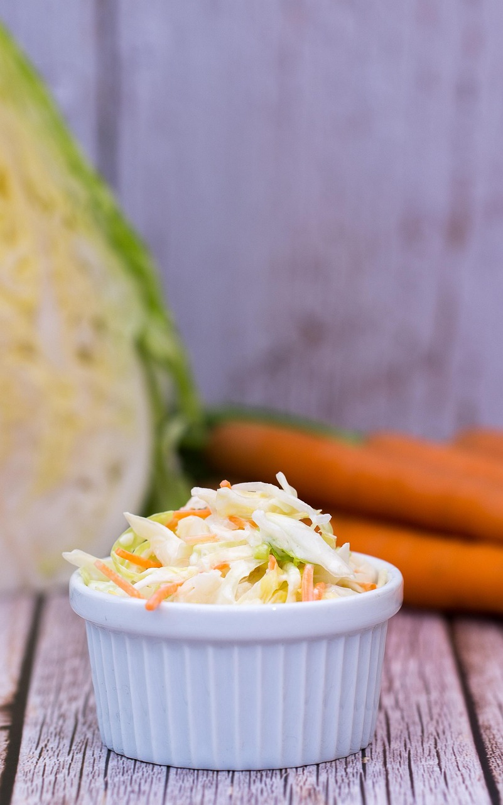

Creamy Spiced Coleslaw

Creamy Spiced Coleslaw
- 1 Cup Mayonnaise
- 2 Tablespoons Sugar
- 2 Tablespoons Cider Vinegar
- 1/2 teaspoon Salt
- 1/2 teaspoon Pepper
- 1/2 teaspoon Celery Seed
- 1/2 teaspoon Garlic Powder
- 1/2 teaspoon Onion Powder
- 1 (16 ounce) Package Shredded Coleslaw Mix
Steps
- Mix mayonnaise, sugar, cider vinegar, salt, pepper, celery seed, garlic powder, and onion powder together in a large bowl. Add coleslaw mix and toss to coat. Cover and chill for at least 1 hour before serving.
Return to Homepage